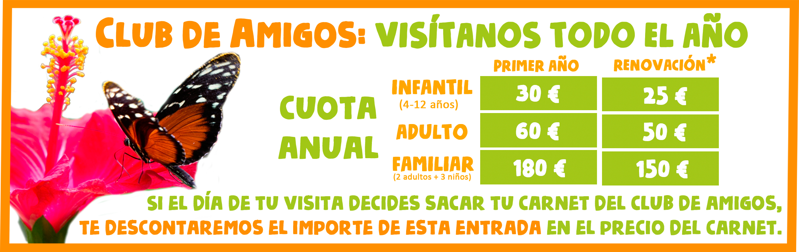

En nuestros más de 40 Programas de Conservación
de especies en Peligro de Extinción.
En los Proyectos de Investigación en los que participamos, cediendo todo tipo de muestras.
En nuestro Programa de Educación Ambiental, en el que transmitimos la importarcia de la biodiversidad a nuestros visitantes
|  |